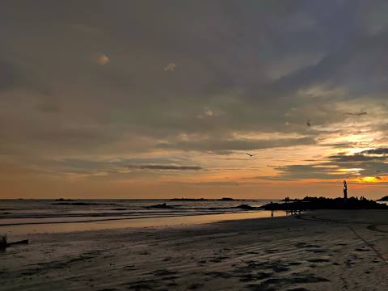
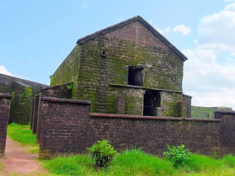
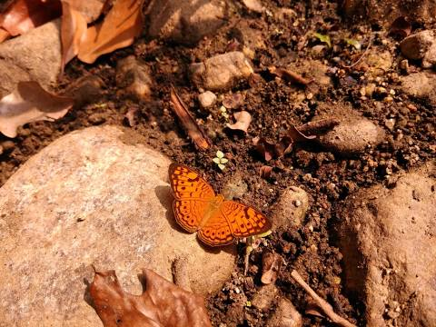

Muzhappilangad Drive-in Beach
Muzhappilangad Drive-in Beach is a beach on the Malabar Coast in the state of Kerala in southwestern India. It is located parallel to National Highway 66 between Kannur and Thalassery.
St. Angelo Fort (Kannur Fort)
St. Angelo Fort is a fort facing the Arabian Sea, situated 3 km from Kannur, a city in Kerala state, south India.
Paithalmala

Paithalmala is a hill station in the Kannur district of Kerala in India. Located near Pottenplave village, at a height of 1372 m above sea level, this is the highest geographic peak in Kannur. It is located at 40 km from Taliparamba and 65 km from Kannur. Nestled in the Kerala Karnataka border near to Kodagu forests, it lies in the Western Ghats.
Aralam Wildlife Sanctuary
Aralam Wildlife Sanctuary is the northernmost wildlife sanctuary of Kerala, southwest India. It is 55 km² in area and located on the western slope of the Western Ghats. It was established in 1984. The headquarters of the sanctuary is near Iritty. Aralam Wildlife Sanctuary is situated in the southeast part of Kannur District.